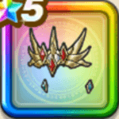

ルビスの光冠
攻略班 10点 / ドラゴン系への耐性+5%怪人系への耐性+5%斬撃・体技耐性+5%【得】斬撃・体技耐性+2%怪人系への耐性+5%物質系への耐性+5%スキルの斬撃・体技ダメージ+10%
くわしい特徴
【レベル別習得スキル】 Lv1ドラゴン系への耐性+5% Lv5怪人系への耐性+5% Lv8スキルの斬撃・体技ダメージ+10% Lv10斬撃・体技耐性+5% Lv12【得】斬撃・体技耐性+2% Lv15怪人系への耐性+5% Lv20さいだいHP+5 Lv23物質系への耐性+5% Lv25守備力+3 【限界突破スキル】 1凸攻撃力+12 2凸すばやさ+12 3凸守備力+12 4凸さいだいHP+12